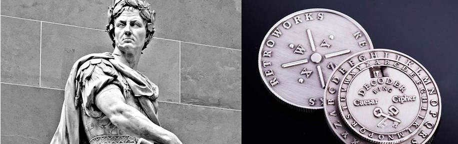

Il cifrario di Cesare funziona secondo il principio della sostituzione monoalfabetica, questa tecnica genera il testo cifrato sostituendo ogni lettera del testo in chiaro con la lettera che si trova un certo numero di posizioni dopo nell'alfabeto.
Giulio Cesare per cifrare i suoi messaggi usava la chiave 3, con questo metodo la "A" in chiaro diventava la "D" nel testo cifrato, la "B" veniva sostituita con la "E" ecc.

Questo tipo di cifrari vengono anche chiamati "cifrari a sostituzione" o "cifrari a scorrimento" proprio per la metodologia applicata che consiste nel sostituire ogni lettera del testo in chiaro dall'inizio alla fine.
Nel menu abbiamo inserito 2 voci:
con le quali possiamo provare il Cifrario di Cesare.